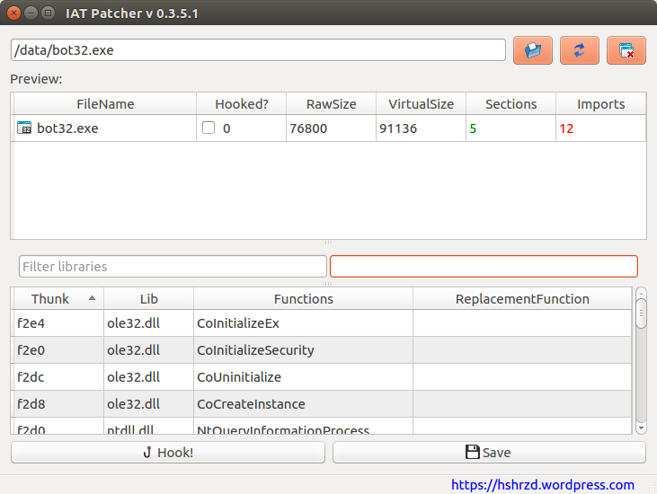
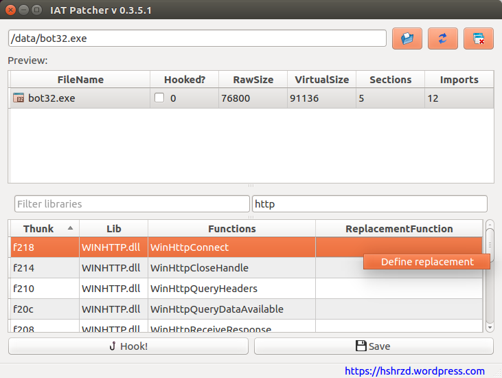
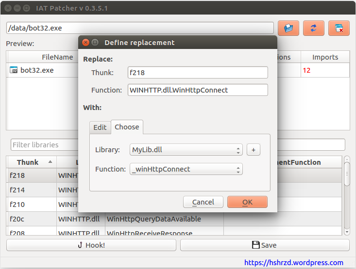
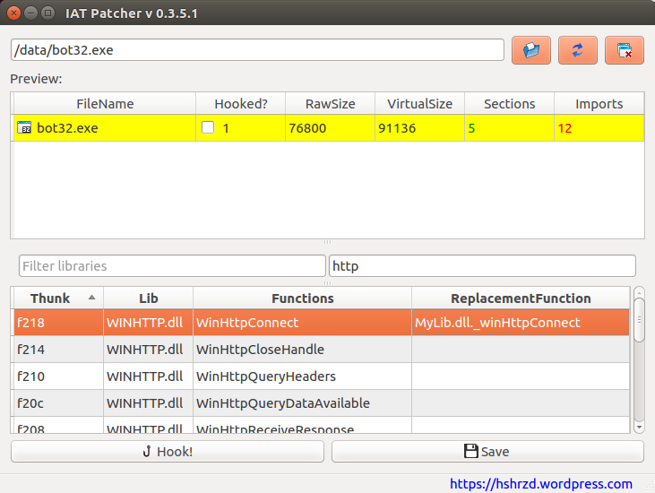
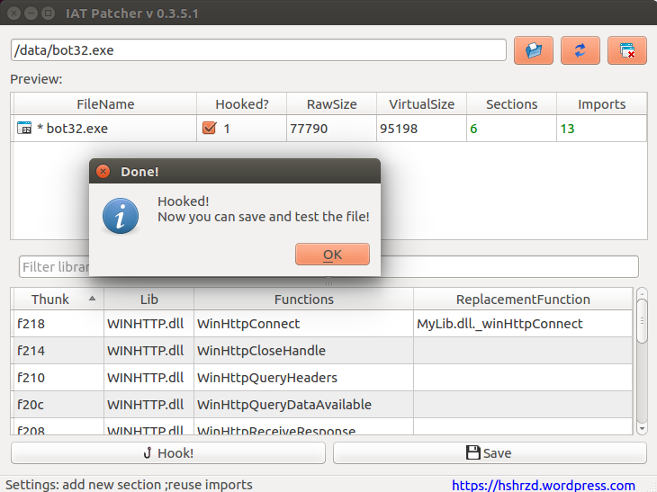

IAT patcher
IAT Patcher is an IAT hooking application. Targets PE 32 and 64 bit.
It allows you to persistently replace any function that is called via IAT by the function from your own library - the only requirements is that both functions must have matching headers (the same number/type of parameters, calling style etc).
This application can be built for multiple platforms (tested on Windows and Linux 32 and 64 bit).
You can find Windows builds here:
https://github.com/hasherezade/IAT_patcher/releases/
For other platforms you need to build from the sources.
Requires:
- bearparser: https://github.com/hasherezade/bearparser
- Qt5 SDK
- Qt5 Core
- Qt5 GUI
- cmake http://www.cmake.org/
Please report any bugs and remarks to: hasherezade@gmail.com
Autobuild:
To download complete source and compile IAT Patcher on Linux you can use this script:
https://gist.github.com/hasherezade/c1df1cabc99e7963ec77
Just run it and it will do everything for you!
See also how to build it manually: https://asciinema.org/a/aakifgbiomqqnl0q08fzy3a62
How it works:
1. Choose what function(s) you want to replace. Find it in the Import Table of your target application. If you load your target to IAT Patcher, it show you the complete list of the functions that can be replaced.

You can filter the functions and libraries by keywords, i.e.
In the given example, let's assume that we want to replace WinHttpConnect.
2. Create your own DLL that will export the replacement function.
The header of the replacement function must be exaclty the same like of the function that we want to replace, that's why we must find it and copy. You can check details i.e. on MSDN. Example: WinHttpConnect
Sample replacement DLLs are available in my repository:
https://github.com/hasherezade/IAT_patcher_samples
3. Build the replacement DLL for appropriate architecture.
4. Once you have the DLL ready, you can proceed with hooking the target application. First, define the replacement:

Add your library and choose the appropriate function:
You will see the application hilighted - it means you defined the replacement, but didn't committed the changes to the target application yet.
5. Click "Hook!" in order to add the replacement to your target application.
